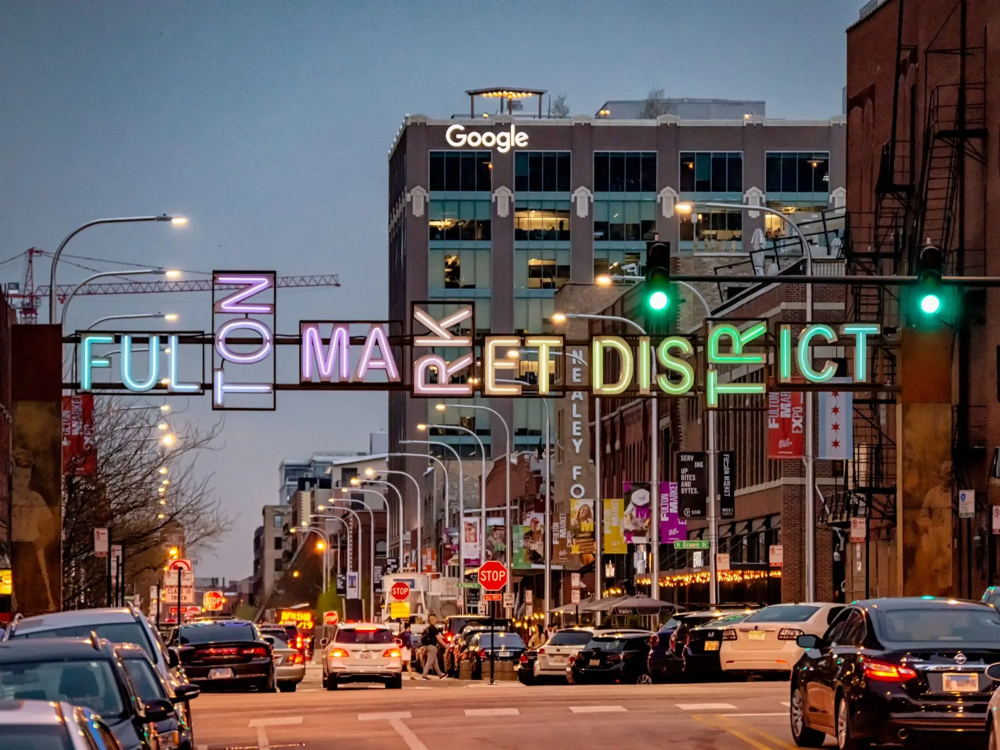
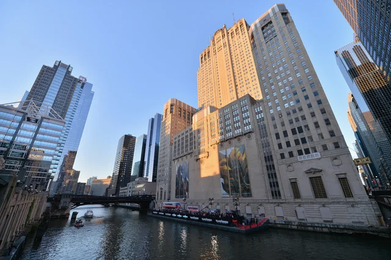
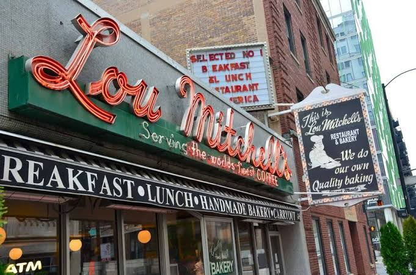
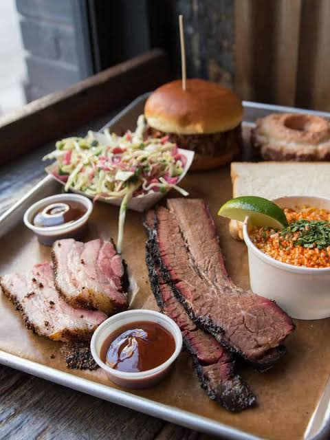

The 34th Ward covers the heart of downtown Chicago's west side - from the Loop and Printers Row through Greektown and the West Loop.
Drag to pan. Right-click drag (or two fingers) to rotate and tilt. Scroll to zoom. Click any red dot for business info, or any building to see what's there.
Once the city's warehouse and market district, the West Loop is now one of Chicago's fastest-growing neighborhoods - home to acclaimed restaurants along Randolph Street's "Restaurant Row," Mary Bartelme Park, the Green City Market's West Loop location on Monroe, and a mix of converted lofts and new residential towers.
Greektown
Centered on Halsted Street, Greektown is one of Chicago's most storied ethnic enclaves, anchored by classic Greek restaurants and the National Hellenic Museum at 333 S. Halsted. The neighborhood hosts cultural celebrations year-round and sits at the western gateway to downtown.

Fulton River District
Between the Chicago River and the Kennedy Expressway, this former industrial pocket has become a dense residential neighborhood of high-rises and converted warehouses, with quick access to both the Loop and the Fulton Market corridor.

The Loop (western section)
The ward takes in much of the western and central Loop - Chicago's historic commercial core - including Daley Plaza and its Thursday farmers market, major CTA stations, Union Station, and Ogilvie Transportation Center, the commuter rail gateways to the entire region.
Printers Row
Named for the printing and publishing houses that filled its landmark loft buildings a century ago, Printers Row is a compact, historic South Loop enclave along Dearborn Street, known for its annual Lit Fest, Printers Row Park, and some of the city's earliest loft conversions.
South Loop
South of Congress Parkway, the ward includes a growing stretch of the South Loop with residential high-rises, the Roosevelt Collection shops, and easy access to the Museum Campus and lakefront just beyond the ward's edge.
Little Italy / University Village (eastern edge)
The ward's southwestern reaches touch the historic Little Italy neighborhood along Taylor Street and the University of Illinois Chicago campus area, where classic Italian institutions sit alongside student life and new development.
Ward Icons
Landmarks and institutions that give the 34th Ward its character.

Lou Mitchell's
Serving breakfast at 565 W. Jackson since 1923, Lou Mitchell's is the classic diner at the starting line of Route 66 - famous for double-yolk eggs, fluffy omelettes, and free Milk Duds and donut holes while you wait.
The tallest building in the Western Hemisphere for a quarter century, the 110-story tower at 233 S. Wacker anchors the ward's skyline - visible here over Mary Bartelme Park. The Skydeck's glass Ledge draws visitors from around the world.
A breakfast institution since 1953, famous for the oven-baked Dutch Baby and apple pancakes. The West Loop location at 1124 W. Madison fills its striped-awning patio all summer.
The little red, white, and green stand at 1068 W. Taylor has served Italian ice to Little Italy since 1954. The line down the block on a hot night is a Chicago summer ritual all its own.

Green Street Smoked Meats
Tucked down an alley entrance at 112 N. Green, this Texas-style barbecue hall helped define the West Loop's food scene - brisket and frozen drinks at long communal tables.
The members' club and hotel at 113-125 N. Green occupies the century-old Chicago Belting Factory - its gym, rooftop pool, and restaurants (some open to the public) made it an early anchor of the Green Street corridor.
The 1929 Art Deco "throne" on the river at 20 N. Wacker seats 3,500 - one of the great opera houses of the world, and the western Loop's most dramatic riverfront facade.
The ward's eastern edge runs along the river's Main Branch - water taxis, architecture cruises, and the string of movable bridges that define downtown Chicago.